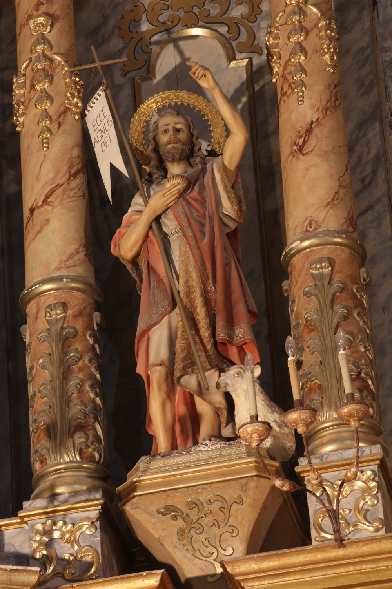

San Juan Bautista (s. I) fue hijo de Isabel, prima de la Virgen María, y de Zacarías, a quien el arcángel san Gabriel anunció el nacimiento de Juan y reveló que sería el precursor del Mesías. Ya de adulto, Juan llevó una vida ascética en el desierto, dedicada a predicar el arrepentimiento de los pecados y a bautizar en el río Jordán a quien quisiera purificarse de sus pecados en preparación para la llegada del Reino de los Cielos. Fue en este contexto que bautizó a Jesucristo poco antes de que este iniciara su vida pública.
En esta escultura, san Juan aparece acompañado de un cordero y sosteniendo con una mano la concha que utilizaba para bautizar en el Jordán y, con la otra, una larga cruz de caña con una banderola en la que se lee “Ecce Agnus Dei”. La cruz nos recuerda que san Juan conocía el futuro martirio de Jesús, mientras que la caña con la que está hecha simboliza la austeridad de su vida en el desierto. El cordero y el texto de la banderola hacen referencia a sus palabras en el momento de bautizar a Jesús: “Este es el Cordero de Dios, el que quita el pecado del mundo”.